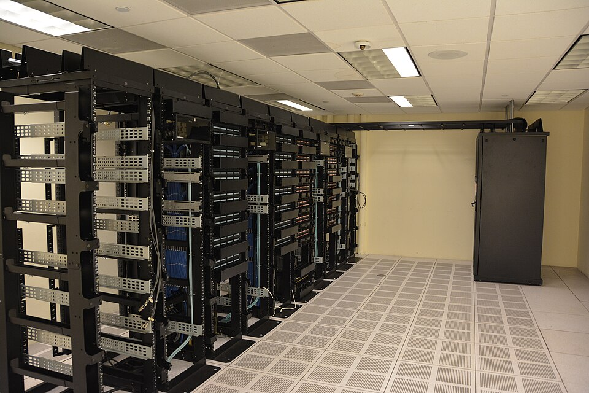
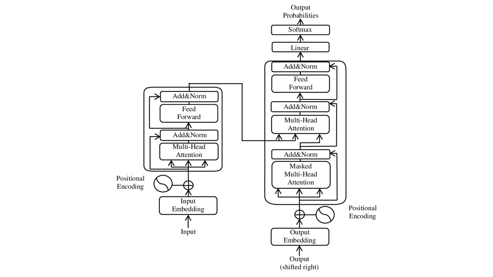
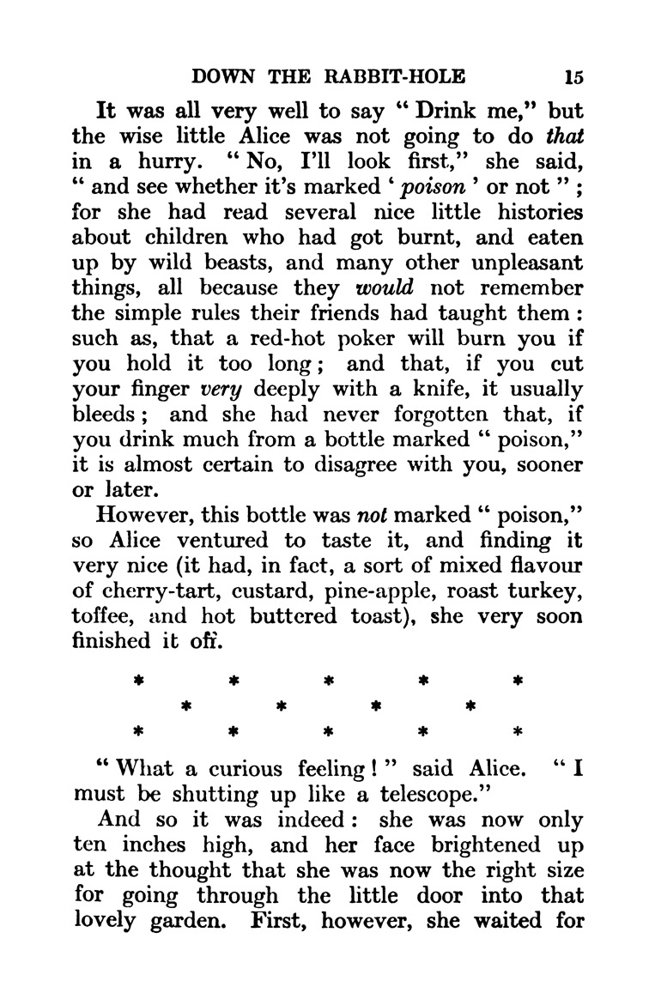
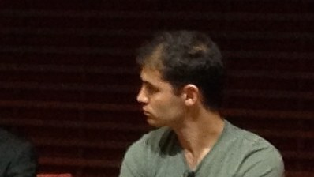
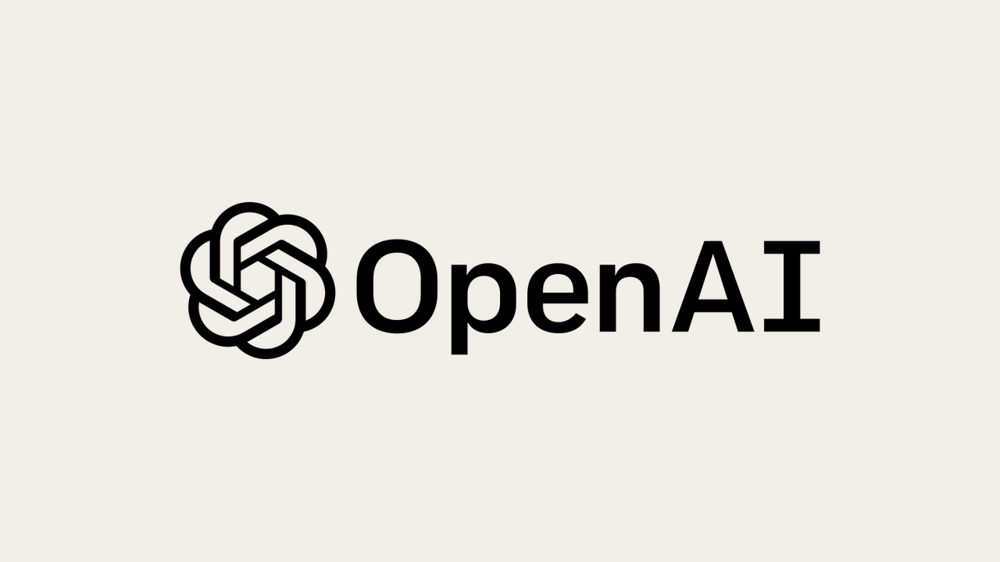
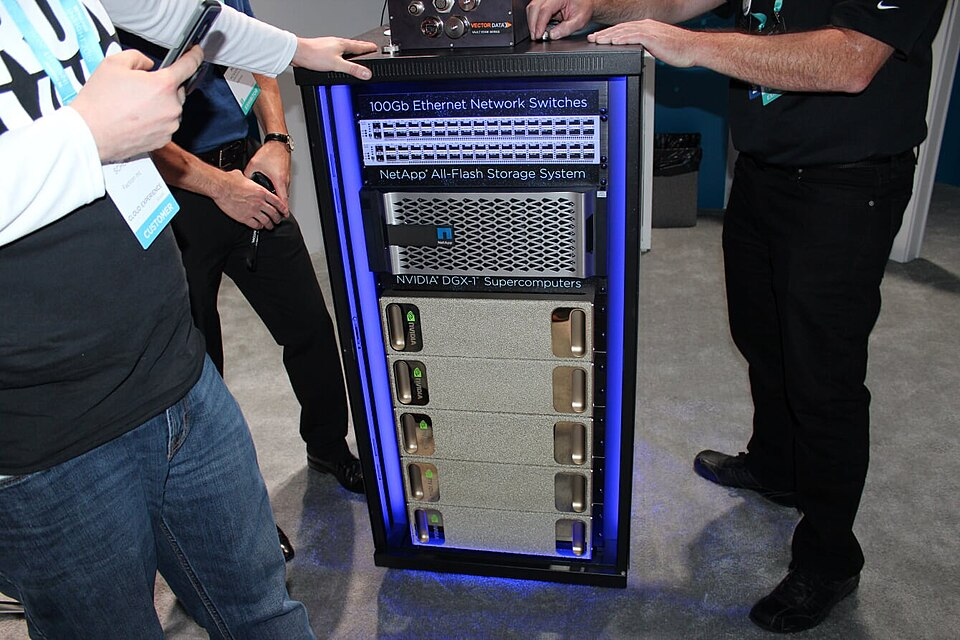
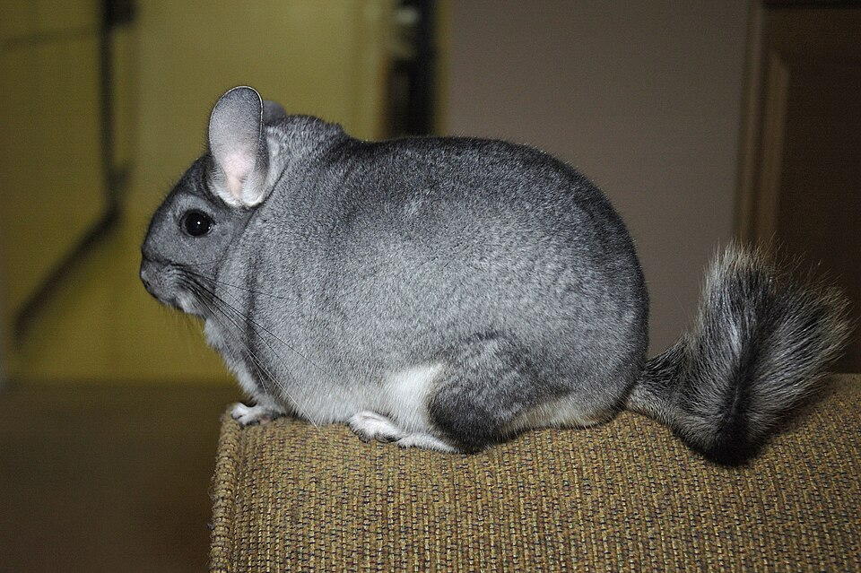
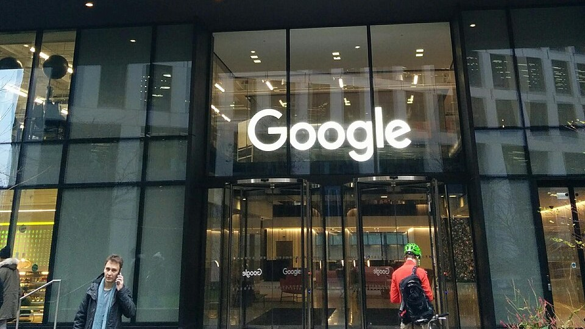
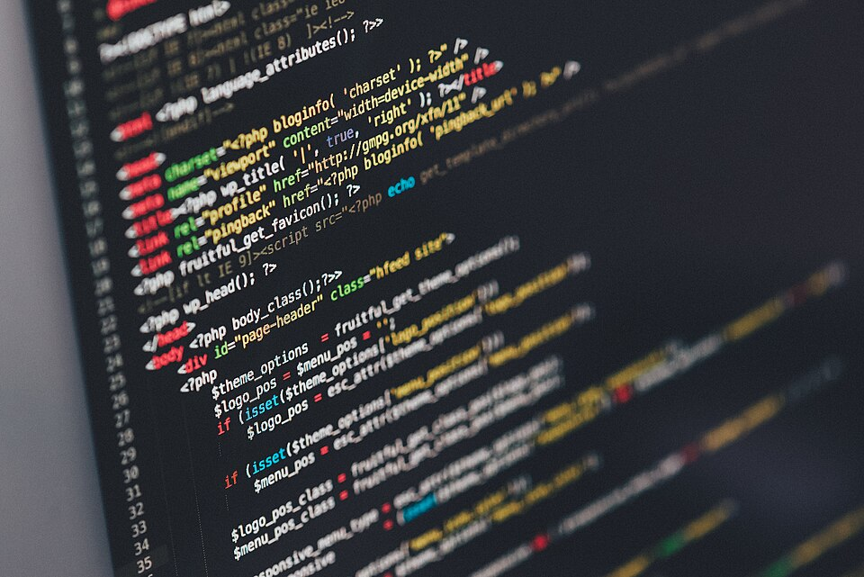

A escala
De 2017 a 2022, em ordem e com as pessoas. A etapa 9 fechou o arco da máquina no Transformer de 2017; a etapa 10 deixou a rede cheia de texto, e as placas que o feed pagou. Este episódio junta as duas pontas: o que acontece quando o mesmo desenho de 2017 fica mil vezes maior. Quando o áudio pedir, aperte Próximo.
O desenho é o Transformer, de junho de 2017. Ele nasceu pra traduzir. Cinco anos depois, o mesmo desenho, com mil vezes mais peças e mil vezes mais texto, é a base do que explode em novembro de 2022.

Attention is All You Need
Em 2017 ele era um jeito melhor de traduzir, entre vários. A trilha conta a história; o mecanismo da atenção, passo a passo, fica pra um extra.

Tapar a próxima palavra

A tarefa é uma só: dado o começo, qual é a próxima palavra? O texto já traz a resposta, então não precisa de ninguém corrigindo: cada frase de cada livro vira um exercício com gabarito grátis. A máquina não lê palavras inteiras: corta o texto em pedaços, os tokens, e é um pedaço desses que ela adivinha.
GPT-1: lê livros, depois ajusta
Ilya Sutskever, o da AlexNet do 9.03, assina junto. A ideia: em vez de ensinar uma tarefa por vez, deixar a máquina ler primeiro e ensinar a tarefa depois, com pouco.

BERT lê nos dois sentidos
Os dois são o mesmo desenho de 2017, cortado ao meio de jeitos diferentes. O BERT tomou conta da busca do Google; o GPT, desta história.

GPT-2: dez vezes maior, e guardado
A aposta soa como aposta: em 2019 ninguém sabia se segurar era cuidado ou exagero, e a crítica veio das duas pontas. Pela primeira vez um modelo de texto foi tratado como algo que podia sair do controle.

As leis de escala
Pela primeira vez dava pra prever o resultado antes de gastar o dinheiro. O software dizendo ao hardware quanto precisa. Tem um extra sobre a reta e a conta que vem dela.
GPT-3: cem vezes o anterior
O texto que treinou o GPT-3 é o texto da etapa 10: a web que o feed encheu de gente escrevendo. O dado veio de graça; a conta, não.

Aprender pelo exemplo, dentro da pergunta
O GPT-3 não foi ajustado pra nenhuma tarefa. Com três exemplos no próprio texto, ele fazia o quarto: traduzia, somava, respondia. Ninguém programou isso; apareceu com o tamanho. O paper chamou de few-shot: o modelo não muda por dentro, só lê.
Chinchilla: o tamanho certo
A placa voltou a mandar no software: a conta do galpão decide o tamanho do modelo e quanto texto ele lê. Jordan Hoffmann, matemático de Harvard, assina na frente, com mais vinte e um. Saiu da DeepMind em 2022; a última notícia pública é de 2024, na Microsoft, em Londres.


GPT-3.5: o modelo que aprendeu código
Seguir instrução não vem de crescer: vem de gente ensinando a responder, e isso é o 11.03. O que este episódio entrega é o modelo pronto pra ser ensinado. Tem um extra sobre o Codex e o Copilot.

2022


A reta diz quanto o modelo precisa. Quem constrói o galpão que cabe isso?